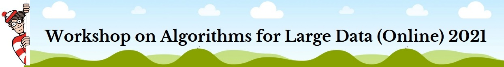

This workshop aims to foster collaborations between researchers across multiple disciplines through a set of central questions and techniques for algorithmic design for big data. We will focus on topics such as sublinear algorithms, streaming and sketching, randomized numerical linear algebra, and learning and testing. What: Workshop on Algorithms for Large Data When: Monday, August 23 - Wednesday, August 25, 2021 (provisionally) Where: Online
